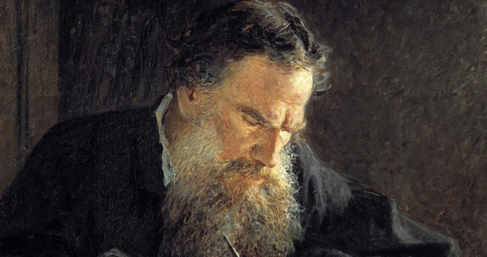

Bá tước Lev Nikolayevich Tolstoy (1828-1910) là tiểu thuyết gia người Nga, nhà triết học, người theo chủ nghĩa hoà bình, nhà cải cách giáo dục, và là một thành viên có ảnh hưởng của gia đình Tolstoy. Lev Tolstoy được yêu mến ở khắp mọi nơi. Ông đặc biệt nổi tiếng với các kiệt tác “Chiến tranh và hoà bình” và “Anna Kare- nina”, hai tác phẩm đỉnh cao của tiểu thuyết hiện thực. Chiến tranh và hoà bình được đánh giá là một trong những tiểu thuyết vĩ đại nhất của văn học thế giới.

Sinh thời Tolstoy rất yêu thích môn toán. Ông rất thích thú với những bài toán đố dân gian, với lối suy luận chặt chẽ của số học. Thích đến mức ông cố gắng đưa những bài toán nhỏ, vui vào truyện của mình bất cứ lúc nào có thể được, như để thỏa mãn lòng say mê toán học ấp ủ lâu ngày nay mới có dịp phô bày ra. Tư duy văn học hình tượng và tư duy toán học chính xác cùng hòa chung trong bộ óc của ông. Trong truyện nổi tiếng “Một người cần bao nhiêu ruộng đất ?", ông viết về một cảnh mua bán đất thời xưa rất độc đáo và cũng rất đau lòng. Pakhon là một cố nông rất nghèo, cần đất để canh tác. Chủ đất bán đất cho Pakhon theo phương thức: 1000 rup (ruble) cho “một ngày đất”. “Một ngày đất" là phần đất nằm trong đường biên kín do Pakhon chạy vạch ra từ lúc mặt trời mọc, cho đến khi mặt trời lặn. Vấn đề đặt ra là Pakhon chạy càng nhanh càng tốt, chạy theo một đường như thế nào để khi về đến chỗ xuất phát thì diện tích phần trong đường biên là lớn nhất. Trong truyện Tolstoy đã tả cảnh Pakhon chạy như sau:
“Anh ta cắm đầu, cắm cổ mà chạy... Áo quần ướt đẫm mồ hôi, dính chặt vào thân thể, miệng khô đắng, ngực thở dồn dập như kéo bễ, tim đập thình thịch như nhịp trống liên hồi... Pakhon dồn hết chút sức lực cuối cùng để chạy. Mặt trời cũng đã lăn sát đến đường chân trời, hoàng hôn sắp đến ... Một phần mặt trời đã mất hút sau đường chân trời. Dồn hết chút sức lực cuối cùng, Pakhon hít một hơi thật căng chạy về phía đỉnh gò, nơi có chiếc mũ đánh dấu nơi xuất phát buổi sáng. Khi đã nhìn rõ chiếc mũ, đôi chân Pakhon chạm vào nhau và anh ta ngã xuống, đôi tay duỗi về phía trước, với tới chiếc mũ.
"Giỏi quá! Pakhon đã chiếm được rất nhiều đất" – Già làng kêu lên.
Một nông dân chạy đến nâng Pakhon dậy nhưng miệng anh ta ộc ra máu. Pakhon đã tắt thở,"
Căn cứ vào hành trình mà Pakhon đã thực hiện, anh ta chạy theo một hình thang vuông có chu vi là 40 versta (dặm Nga, 1 versta bằng 1,067 km ) với hai đáy lần lượt là 2 và 10 versta ; đường cao 13 versta; cạnh bên 15 versta. Diện tích đất mà Pakhon đạt được là
\begin{equation*} \frac{(2+10) \times 3}{2} = 78 \end{equation*}
Bỏ qua khía cạnh khác, vấn đề ta nói ở đây là yếu tố toán học của câu chuyện: Một bài toán cực trị trong hình học, bài toán đẳng chu .
“Đẳng” là bằng nhau, là không thay đổi. “Chu” là vòng khắp, là vòng quanh, là một vòng xung quanh. Bài toán Đẳng chu là một trong các bài toán cơ bản của phép tính biến phân, có nội dung như sau: “Trong tất cả các đường cong có độ dài đã cho, tìm đường làm cho một đại lượng nào đó, là phiếm hàm của các đường, lấy giá trị lớn nhất hoặc nhỏ nhất”.
Trong Hình học phẳng, bài toán Đẳng chu được phát biểu như sau: “Trong tất cả các hình phẳng có chu vi bằng nhau, tìm hình có diện tích lớn nhất”.
Như vậy, câu hỏi đặt ra rằng với độ dài đường chạy đó, Pakhon đã đạt được diện tích lớn nhất chưa?
Trong bộ môn hình học sơ cấp chúng ta đã biết, trong tất cả các hình lồi cùng chu vì thì hình tròn có diện tích lớn nhất. Vậy vì sao ta có thể khẳng định được diện tích hình tròn là lớn nhất ? Định lí đẳng chu đã được chứng minh sau một quá trình suy luận khá dài và phức tạp. Tuy nhiên, định lí này cũng có thể được chứng minh từ bổ đề sau đây (bổ đề này có nhiều cách chứng minh, trong đó cách chứng minh sau đây rất độc đáo vì chỉ dùng những kiến thức hết sức sơ cấp !)
Từ đỉnh A của đa giác, ta kẻ đường thẳng AQ chia đa giác này thành hai đa giác sao cho
. . .